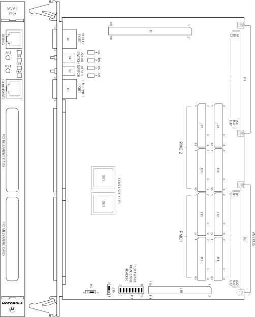

Operating Documentation
Direction 5114045-800, Rev# 10
LightSpeed 4.X Service Information (Advanced)
Operating Documentation |
There are two switches (ABT and RST) and four LED (light-emitting diode) status indicators (BFL, CPU, PMC (two)) located on the MVME2xxx front panel. See Illustration 1.
When activated by software, the Abort switch, ABT, can generate an interrupt signal from the base board to the processor at a user-programmable level. The interrupt is normally used to abort program execution and return control to the debugger firmware located in the MVME24xx Flash memory. The interrupt signal reaches the processor module via ISA bus interrupt line IRQ8*. The signal is also available from the general purpose I/O port, which allows software to poll the Abort switch after an IRQ8* interrupt and verify that it has been pressed.
The interrupter connected to the ABT switch is an edge-sensitive circuit, filtered to remove switch bounce.
The Reset switch, RST, resets all onboard devices and causes HRESET* to be asserted in the MPC750. It also drives a SYSRESET* signal, if the MVME24xx processor module is the system controller.
The Universe ASIC includes both a global and a local reset driver. When the Universe operates as the VMEbus system controller, the reset driver provides a global system reset by asserting the VMEbus signal SYSRESET*. A SYSRESET* signal may be generated by the RESET switch, a power-up reset, a watchdog time-out, or by a control bit in the Miscellaneous Control Register (MISC_CTL) in the Universe ASIC. SYSRESET* remains asserted for at least 200 ms, as required by the VMEbus specification.
Similarly, the Universe ASIC supplies an input signal and a control bit to initiate a local reset operation. By setting a control bit, software can maintain a board in a reset state, disabling a faulty board from participating in normal system operation. The local reset driver is enabled even when the Universe ASIC is not system controller. Local resets may be generated by the RST switch, a power-up reset, a watchdog time-out, a VMEbus SYSRESET*, or a control bit in the MISC_CTL register.
There are four LED (light-emitting diode) status indicators located on the MVME24xx front panel. BFL, CPU, PMC2, and PMC1. See Illustration 1.
BFL (DS1) - The yellow BFL LED indicates board failure; lights when the BRDFAIL* signal line is active.
CPU (DS2) - The green CPU LED indicates CPU activity; lights when the DBB* (Data Bus Busy) signal line on the processor bus is active.
PMC (DS3) - The top green PMC LED indicates PCI activity; lights when the PCI bus grant to PMC2 signal line on the PCI bus is active. This indicates that a PMC installed on slot 2 is active.
PMC (DS4) - The bottom green PMC LED indicates PCI activity; lights when the PCI bus grant to PMC1 signal line on the PCI bus is active. This indicates that a PMC installed on slot 1 is active.
The RJ45 port on the front panel of the MVME24xx labeled 10/100 BASE-T supplies the Ethernet LAN 10Base-T/100Base-TX interface, implemented with a DEC 21140/21143 device.
Illustration 1: RIP - Motorola Board - GE Specific Settings
